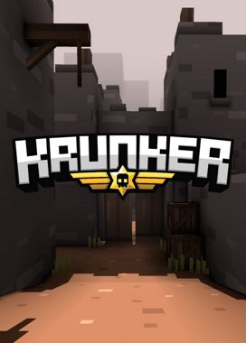
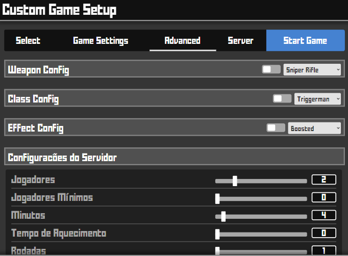
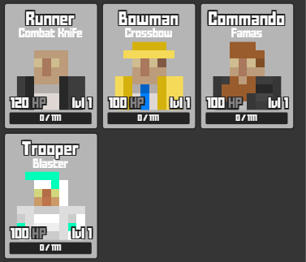

O jogo Krunker é um jogo de FPS muito interessante, uma das suas qualidades é a sua resposividade, basicamente ele funciona em qualque dispositivo, se a sua máquina usar Windows, Mac, Android, Linux ou iOS certamente ele vai funcionar. A desenvolverora chamda Yendis Entertainment foi lançada em 29 de janeiro de 2019 e se popularizou pela disponibilizar jogos leves mas interessante que possibilitando que pessoas que não pretendem gastar dinheiro com melhorias nos dispositivos ou que não e indivíduos que não querem baixar nada no armazenamento. Basicamente você só vai precisar de um navegador e acessar o site e pronto. Seu gráfico pixelado é um referência clara ao jogo minecraft, isso o ajuda a ser mais leve, dessa não precisa de um servidor super potente e nem que a sua máquina seja bem dotada de processamento.

Existe várias possibilidades de jogar krunker, a mais conhecidada é pelo navegador, além de não
precisar baixar nada, funciona praticamente máquina que não seja muito fraca. Certamente qualquer navegador
roda. Pelo computador primeiramente abra seu navegador, depois, digite krunker.io logo depois, basta
clicar na tela para começar em uma partida aleatória. Também é possivel jogar por um aplicativo mas não é muito recomendado.
Pelo Smartphone não é diferente, também é possivel jogar pelo navegador usando o mesmo link porém, existe um aplicativo gratúito
e oficia na Play Store, mas novamente recomendamos jogar sempre pelo navegador, aparentemente o aplicaivo apresenta pequenos
travamentos. Dependendo da sua internet, pode ser que o jogo fique mei difícil de jogar, travando ou com o tempo de resposta baixo,
isso é normal acontecer com celulares
O Krunker possui vários modos de jogo, para mostrar-mos tudo, iremos separar em 2 modos diferentes que compõem uma grade possibilidade de maneiras diferentes de conectividade.
No modo HostGame você poderá criar uma sala privada a qual você pode configurar da forma que quiser, desde armas, tempo por partida, mapas ou até mesmo a gravidade ou força de pulo entre muitas outras configurações que podem ser inseridas. Geralmente este modo é usado para partidas entre amigos, lembrando que por ser um jogo direto do navegador, não é possivel criar uma sala em que a comunicação entre os dispositivos seja a LAN como no CS 1.6 por exempo, oque pode causar uma latência não tão agradável em certos momentos. Para criar uma sala basta clicar em host Game na página inicial do game e depois de efetuar a configurações, é só clicar em Start Game e prontinho, uma sala privada acabou de ser criada. Para que seus amigos entrem na mesma sala a qual acabou de ser criada, será necessário digitar exato link que irá apareecer na sua barra de pesquisa do navegador, isso vale tanto para computador quanto para Smartphone. Após digitar o link, só irá faltar apenas dar um enter e pronto, seu amigo estará na mesma sala que você, é importante avisar que se o criador da sala colocar senha, aparecerá um campo para sua introdução.
Neste modo não tem enrolação já que todas as partidas presentes nela são públicas, então basicamente você entra, escolhe a partida e prontinho, já pde se divertir sem precisar criar uma sala, oúnico problema é que neste não é possivel alterar as configurações da partidas, ou seja, você não poderá definir quem irá entrar quanto tempo vai durar as partidas ou alterar o dano que uma arma causa ao atingir alguém.
Muitos dos usuários desconhecem a existência das classes presentes no Krunker, elas tem a função de mudar o seu personagem, junto a ele, vem muitas características próprias como velocidade de movimento, quantidade de vida e claro a skin. Junto ao personagem vem uma única, apenas ele possui.

A posibilidade de jogar sem baixar nada e ainda ser possivel jogar em quase qualquer computador é incrível, além da variedade
de mapas, possibilidade de criar salas privadas e a variedade de personagens que com características diferentes e únicas.
Também é bossivel criar mapas personalizados e criar servidores não oficiais além de possibilitar várias configurações do jogo
como gráficos, layout, e miras.
A desvantagem principal do Krunker é a conexão, o servidor alocado no Brasil sempre está cheio, oque causa lags durante o jogos, recomendamos sempre usar o servidor de Miami que geralmente apresenta uma performace melhor que o cervidor brasileiro.